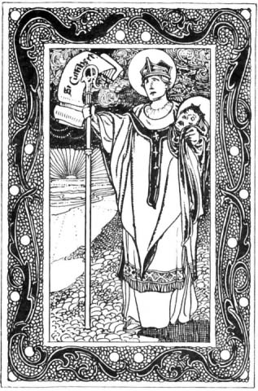

St. Cuthbert, Bishop, 687
AWAY up North beyond the Border, in the wild country of Lammermoor, lived a little orphan boy named Cuthbert. An old widow took care of him till he was big enough to go out and earn his living as a shepherd. He was the bravest and strongest boy in all that countryside: none could run so fast as he, or stand against him in wrestling and fighting. But when he became a shepherd, and sat through the long lonely nights on the bleak hills, looking at the stars and listening for the distant howling of the wolves, then deeper thoughts would come into his head. He thought of all the wonder of this great world, and of God who had made it, and of his own little self whom God had made to become like Him. One night he saw a shower of bright shooting stars fall through the sky; they seemed to him like a company of angels who had come to fetch some pure soul to heaven. Next day he heard that just at that time St Aidan had died. So he determined to be a monk.
But in those rough times so brave a lad could ill be spared
from warlike exercise, and for a while our Cuthbert became a
soldier. Then, when he was still only a lad of fifteen, the country
became quieter, and he was free to go. One morning in the Abbey
of Melrose the monks heard a visitor knocking at the door. It
was Cuthbert, the young soldier, on horseback with a lance in
his hand, waiting on his horse for admittance. I want to
be a monk,
he said, will you take me in?
The
abbot, whose name was Eata, and the prior were both great and
holy men; they taught Cuthbert, and soon they loved him greatly.
The new monk became remarkable for his devotion even amongst those good men. He set himself to the hardest missionary work among the fierce half-heathen picts and Saxons who lived in their little villages among the mountains and glens that stretch between the Solway and the Forth. There were no rich meadows or cosy farms, and no roads, in those days, but great desolate tracts of country where the traveller had to pick his way along boggy pathways with spear in hand, ready for the robbers who might spring out upon him, Cuthbert would leave his abbey at Melrose for weeks at a time, searching out the shepherds who lived, as he had lived, in rude wooden hovels, or finding his way up into the craggy mountains to little villages where never Christian priest had reached before. Oftentimes he was near to perishing with hunger, and yet he would share his last loaf with a poor man, and however little he had to eat, he always gave part of it to his horse, when he had one.
Once he was travelling thus with a lad, and they were alone
on the great heath with no place near to give them shelter. The
poor boy complained of hunger. Cuthbert turned to him and said,
Never did a man die of hunger who served God faithfully.
Then he pointed to an eagle that was flying overhead. God
can give us a meal by the service of that eagle,
he said.
Soon the eagle flew down to the water. Run to our servant
there,
said he, and see what the Lord may have sent
us by her.
The boy scared the eagle away, and found a good-sized
fish, and brought it back. What have you done, my son?
said the saint. Why have you not given our servant her
share? Cut the fish in half, and take back to the eagle her part
of what she has brought us.
Is it wonderful that the peasant folk loved a man like this? His face used to shine, we are told, with angelic beauty, and so winning was his speech that the most hardened sinners would confess all they had done at the very sight of him.
But he who was so gentle to others was hard upon himself. When he was near the sea he used to slip out unnoticed at nightfall, and stand with the cold waves up to his neck, singing his vigils to God. Then he would come out of the water and pray all the rest of the night on the beach. One night a friend crept after him to see what he was doing. He found the saint praying on the shore of the lake. As he prayed, lo! out of the water crept two black otters. They went up to the saint, licked his poor frozen feet, and rubbed their warm fur up against him until he was as warm as they. Cuthbert and the animals always understood one another.
His face used to shine, we are told, with angelic beauty, and so winning was his speech that the most hardened sinners would confess all they had done at the very sight of him.
For a while he was sent down to the monastery at Ripon, where he was steward, and had to wait on the strangers who came for shelter. Through the snow travellers would come, hungry and frozen. Then Cuthbert would wash their feet, warming them against his bosom, till the bread was baked in the oven and supper was ready.
Before he was thirty years old, Cuthbert became prior of Lindisfarne on the coast of Northumberland, where Eata, his old chief at Melrose, was now abbot. There had been great difficulties at Lindisfarne (about which you can read in the life of St. Wilfrid), and all Cuthbert's gentleness and courage were needed to restore peace among the monks, who did not like the new rules which had been made. But how could they resist a man who often spent two nights out of three in prayer?
For twelve years he lived at Lindisfarne, going out constantly on his wonderful missions to the people in Northumbria. Then, when he was forty years old, he determined to be a hermit; for he hoped in that way to live still closer to God.
There was another island within sight of Lindisfarne called Fame Island. It was a desolate place without water, and people were afraid to live on it because they thought it was the haunt of demons. There our saint went to live as a hermit alone. He had a well made in the sandy ground, and, to the wonder of his monks, they found water. He took some barley and a spade, and grew enough corn to give him food, though it was so little that the fisherfolk on the coast thought the angels fed him. He made a round hut of turf, thatched with sticks and grass, to live in, with a little chapel near it; and round it he dug a trench with a mound that in time grew so high that he could only see the sky. Thus he lived, night and day holding sweet converse with God, while the surf roared on the lonely shore and the sea-gulls wailed overhead. The wild animals loved him because he was so quiet and kind. The seals would come out of the sea, and fawn about his feet till he blessed them and let them waddle back happy to the water. The birds, when he asked them, left off taking the seed from his little bailey field. The sea-gulls would hush their screaming when he bade them come to be stroked and petted. Even now, it is said, there is a special kind of sea-fowl in those parts, which is found nowhere else; they are still called the birds of St. Cuthbert, and are tame and gentle, unlike other sea-birds, because ages ago Cuthbert taught them to trust mankind.
All over England folk began to hear of the wonderful saint who lived alone in the desert island, and from all parts the troubled and unhappy came to seek his help. He was like some famous doctor to whom sick folk come; and no doctor ever cured bodies so skillfully as he cured souls and hearts and troubled minds. He built a house by the landing-place on the island for his visitors to stay in, and here, too, his monks would come on festivals to have a talk with him.
At last, after eight happy years had passed, the King of Northumbria came one day, with all his nobles and all the monks of Lindisfarne, to beg him to be their bishop. Loth he was to leave his solitude, but they knelt before him with tears, and begged him so earnestly that at last he consented.
For two years he was Bishop of Lindisfarne, and travelled
up and down the country as of old time. Everywhere that he went
he comforted the sorrowful, and absolved the penitent, and healed
the sick by the strange power that he had. How the people loved
him! They followed him so much that they slept out in tents to
be near him, or made for themselves little huts of branches from
the trees. Happy were the children who were brought to be confirmed
by him, and happy were the people who knelt round when he said
Mass, and heard him say the holy words like one inspired. Yet
he, who prayed so well, said that to help the infirm brethren
was like prayer, well knowing (we are told) that He who said
Thou shall love the Lord thy God,
said likewise,
Thou shalt love thy neighbour as thyself.
But now there were troublous times for the people of Northumbria;
their king was at war with the picts in the North. One day Cuthbert
was in Carlisle, and all the people were filled with anxious
longing for news of the war. The bishop bent over an old Roman
fountain deep in thought, and the bystanders leant forward to
catch the words that fell from his lips. perhaps,
he was saying, at this very hour the fight is over and
done.
How has it gone?
they asked him, but
all he would answer was Watch and pray, watch and pray.
In a few days a solitary way-worn soldier rushed into the city
with the news that all the army had been slain in Scotland, and
that he only had escaped.
Then there was great grief in all Northumbria, and Cuthbert knew that his own end was near. He gave up his bishopric and went back to his island to die. For two months he lay in his little cell, murmuring words of love and counsel to the monks who gathered round him. At last they saw that death was very nigh, and they arranged with the monks at Lindisfarne that they would light a torch for them to see when he died. At midnight they gave him the last Sacrament, and, as they were beginning the midnight psalm, he raised up his hands and sped forth his spirit to God. Then a brother took two torches to the sea-shore, and the monks at Lindisfarne saw the tiny gleam across the dark waters just as they had reached the verse--
Thou hast shewed thy people heavy things: thou hast given us a drink of deadly wine.
So this sixtieth psalm is called the Dirge of St. Cuthbert.
The fishermen in those islands say that the saint still sits at night on a rock and makes little shells, which are only to be found in those coasts, and are called St. Cuthbert's beads.